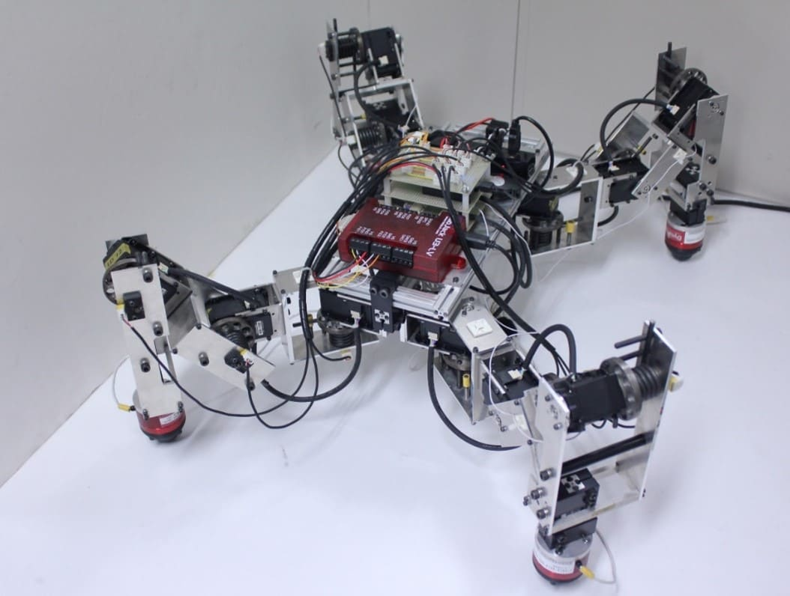

2026/11/5更新
梅本研究室にようこそ
非線形システムのロバスト制御法と、そのロバスト制御法のドローンや柔軟ロボットなどロボットシステムへの応用を研究しています。

ニュース
2026年9月15日 論文"小型陸生生物の非拘束行動計測に向けた三自由度サーボスフィアPSYCHO-ANTAM の工学的基盤"がシステム制御情報学会論文誌に採録されました。DOI: 10.5687/iscie.39.238
2026年8月19日 プレプリント"Payload Swing Estimation and Damping Without Payload Parameters for Multirotor UAVs"をarXivで公開しました。arXiv:2608.18625
2026年5月24日 山田 拓実、柳瀬 智生、南部 太陽(修士1年)がシステム制御情報学会研究発表講演会 SCI'26で発表しました。
2026年3月6日 瀧 敬太、松浦 光輝(修士2年)が北陸信越支部 2026年合同講演会（総会・講演会＆卒業研究発表講演会）で発表しました。
2026年3月5日 中川 廣昭(修士1年)がSICE制御部門マルチシンポジウム MSCS2026で発表しました。
2025年5月27日 塚田 泰生(修士1年)が第69回 システム制御情報学会 研究発表講演会 SCI'25で発表しました。
2025年4月7日 研究室HPができました。
2025年3月24日 計測自動制御学会 (SICE) 北陸支部優秀学生賞 上田 崇人(修士1年)
2025年3月24日 計測自動制御学会 (SICE) 北陸支部優秀学生賞 武野 駿斗(修士1年)
2024年9月14日 上田 崇人、武野 駿斗、牛田 和希(修士1年)が2024年度電気・情報関係学会北陸支部連合大会 (JHES2024)で発表しました。
2024年3月27日 論文"Response Characteristics of Pressure-Sensitive Conductive Elastomer Sensors Using OFC Electrode with Triangular Wave Concavo-Convex Surfaces"がMDPI Sensorsに採録されました。DOI: 10.3390/s24072349
2023年11月2日 論文"Investigation of Contact Surface Changes and Sensor Response of a Pressure-Sensitive Conductive Elastomer"がMDPI electronicsに採録されました。DOI: 10.3390/electronics12214532
2023年10月8日 論文"Control system design for a class of non-cascade nonlinear under-actuated systems with an application to a rotary crane system"がElsevier Mechatronicsに採録されました。DOI: 10.1016/j.mechatronics.2023.103087
2023年4月1日 研究室ができました。